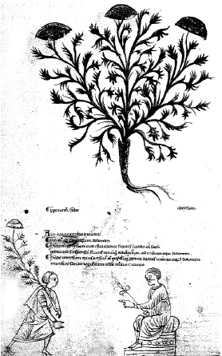

ŞEKİL 2. Bir 13. yüzyıl Ortaçağ eczacılık kitabından, eklem iğnelenmelerine karşı önerilen Meryemana dikeninin (“Silybum marianum”) betimi.2
Kılıçotu, yaklaşık on yıldan beri modern tıp tarafından depresyona karşı doğal bir ilaç olarak kullanılmaktadır. Güzelavratotunun (“Atropa belladonna”) yemişleri çok zehirli olup yapraklarından kramp çözücü, damar genişletici, kalp vuruşlarını yavaşlatıcı ve gözbebeğini büyütücü ilaçlar hazırlanmaktadır. Kadınların gözlerinin büyüklüğü, eskiden en önemli güzellik ölçütlerindendi ve kadınlar gözlerini büyük ve güzel göstermek için bu otun sulu özütünü gözbebeklerine damlatırlardı. Bitkinin adı da bu uygulamadan gelmektedir. Dulavratotu (“Arctium lappa”) da benzer etkilere sahiptir. Adaçayı, daha Romalılarda şifalı bitki olarak kullanılmış ve Charlemagne (Büyük Karl, Şarlman) (742-814), saray ve manastır bahçelerinde onun yetiştirilmesini buyurmuştur. Yüksükotunun (“Digitalis purpurea”) içerdiği “Digitoxin” etken maddesi, kalp ilaçlarının bileşiminde yer almaktadır. Etkinlikleri kanıtlanmış bitkisel eczalar şu şekilde özetlenebilir: Soğuk algınlığında mürver çiçeği, ıhlamur çiçeği, su rezenesinin çiçek ve yaprakları, nane, ökaliptus, anason, kekik, ağaç hatmisi kökü, İzlanda yosunu, ebegümeci yaprak ve çiçekleri, dar yapraklı sinirotu, duvar sarmaşığı yaprağı, çuhaçiçeği kökü, sabunotu kökü; iyi huylu prostat büyümesinde ısırganotu, sagu hurma ağacı, çavdar sapı, kabak çekirdeği; ortadan ağıra dek depresyonda kılıçotu; bunamada mabet ağacı / japon eriği (“Gingko biloba”); gerginlikte (stres) kava-kava kökü; uykusuzlukta kediotu (“Valeriana officinalis”) özütü; düşük düzeyli kalp yetmezliğinde akdiken (“Frangula alnus”) özütü; dolaşım bozukluklarında “Gingko biloba”, sarmısak tozu; toplardamar zayıflığında atkestanesinin (“Aesculus hippocastanum”) tohum özütü; deri iltihaplanmalarında papatya.18
Doğal ilaç hammaddelerine “drog” (ecza, müstahzar) adı verilir ve drog (< İng. “drug”) sözcüğü kimi dillerde genel olarak ilaç anlamına da gelmektedir. Dünyada ilaç, baharat, kozmetik, parfüm, gıda ve meşrubat sanayisinde, şifalı ve dinlendirici çayların hazırlanmasında kullanılan tıbbî ve aromatik bitkilere duyulan gereksinim, gitgide artmaktadır.
“Aroma”, güzel koku demektir. Kimyada “aromatik” denilen bileşikler halka yapılı bileşikler olup bunların içinde güzel kokulu olanlar olduğu gibi kötü kokanlar da vardır. Baharat, yiyeceklere lezzet, çeşni ve aroma vermek amacıyla kullanılan bitkisel ürünler ya da bunların karışımlarıdır. Baharatın ayrıca iştah açıcı, sindirim salgı ve enzimlerini artırıcı ve emilimi hızlandırıcı etkileri de vardır. Et ve diğer kimi besinlerin bozulmasını önleyici özellikleri de bilinmektedir.
Teknolojinin çok ilkel olduğu çağlarda, besinleri saklamak için uygulanan yöntemler, örneğin eti kurutarak saklamak gibi âdetler, sonunda yenen şeyde lezzet bırakmadığı için, baharata gereksinim duyulduğu söylenir. Ortaçağ tarihinde çok önem taşıyan, denetim altına alma uğruna savaşmanın bile göz önüne alındığı ünlü “Baharat Yolu” ve bu yol üzerinden Avrupa’ya taşınan baharatın önemi konusundaki en yaygın açıklama budur. Buna baharatın, pastırmanın çemen içinde korunması gibi, gıdaları doğrudan doğruya koruyarak saklama işine katkısı da eklenebilir. Ayrıca bu çağlarda insanlar baharattan, yiyeceklere lezzet verme dışında ilaç ve afrodizyak olarak da yarar bekliyorlardı.
Yeniçağ başlarında baharat, son derece değerli bir ticaret malıdır. 1492’de Kristof Kolomb’un (Christopher Columbus) (1451-1506) Amerika’yı keşfinden beş yıl sonra denizci Vasco da Gama (1460-1524), dört büyük gemi ile Portekiz’in Lizbon limanından denize açılıp Asya’nın yolunu bularak iki yıl sonra 1499’da iki gemiyle Lizbon’a döner. Bu iki geminin baharat ve diğer mallarla dolu kargosu, ona tüm gezi masraflarının altmış katı kadar bir gelir sağlar! O zamanın Avrupalıları da baharatı günümüzdeki gibi genelde yemeklere çeşni katmak için kullanıyordu. Yiyecek çeşidinin özellikle kış mevsiminde fazla olmadığı o dönemin Avrupa mutfağında tatsız ama besleyici olan, aksi takdirde yenmeyecek durumda olan yemeklerin tadını maskelemek için çok çeşitli ve bol miktarda baharata başvuruluyordu. 16. yüzyılda kimi zaman örneğin et gibi gıdaları, dondurmaksızın bir yıl ya da daha uzun süre korumak amacıyla da baharat kullanılıyordu. Örneğin kuru karanfil, içerdiği öjenol (“eugenol”) etken maddesi nedeniyle gerçekte bakterilerin çoğalmasını önlüyordu. Daha sonraları, öğütülmüş hardalın da gıdaları koruyucu niteliklere sahip olduğu anlaşılmıştır.
Kullanım yoğunluğuna dayalı olarak baharat “birincil” ve “ikincil” baharat şeklinde ikiye ayrılabilmektedir. Karabiber, kırmızıbiber, kakule, zencefil ve zerdeçal birincil baharata, anason tohumu, kimyon, sap kerevizi, kişniş, dereotu tohumu, rezene, çemenotu, safran ve vanilya gibileri ise ikincil baharata örnektir
Dünya çapında bilinen ve kullanılan 70 kadar baharattan dokuzu, miktar ve parasal değer açısından ticarette ilk sıraları alır. Bunlardan karabiber / akbiber yüzde 30’unu; karanfil, kakule, tarçın ve küçük hindistancevizi (muskat) yüzde 40’ını; besbase, zencefil, kırmızıbiber ve yenibahar ise yüzde 20’sini oluşturur. Tohum ve meyve şeklindeki baharattan hardal, kırmızıbiber, kimyon, susam, frenk kimyonu, kişniş; yaprak şeklindeki baharattan mercanköşk, kekik, dereotu ve adaçayı en yaygın olanlarıdır. Dünya piyasasında en pahalı baharat, safrandır; sonra sırasıyla karanfil, kakule, tarhun, kebere, besbase, köri, adaçayı, yenibahar ve nane gelir.
Karabiber pansumanda ya da yakı olarak, zencefil karın ağrısına, tarçın kuvvet şurubu olarak, hindistancevizi soğuk algınlığına, saf alkolle karıştırılmış karanfil yağı kangrene karşı, dövülmüş karabiber / anason / karanfil / hindistancevizi / tarçın / kişniş karışımı ise beyni güçlendirici ve balgam söktürücü olarak kullanılıyordu.19 “Tarçın” sözcüğü, Farsça “Çin ağacı” anlamına “dâr-ı Çin”den ya da “cin ağacı” anlamına “dâr-ı cin”den gelmektedir.
Ülkemizde dışalımı yapılan baharatın başında kahve, kakao, karabiber, tarçın, zencefil ve vanilya gelir. Dışsatımı yapılanlar arasında kimyon, anason, meyankökü, çay ve nane yer almaktadır. Ülke içinde yetiştirilen çay ve anasonun bir kısmı ile; kırmızıbiber, soğan ve sarmısak dışarı satılmayıp içeride tüketilir. Baharat ve parfüm bitkisi olarak kullanılan bitkilerle ilgili adlandırma bilgileri, ÇİZELGE 1’de kısaca verilmiştir:20